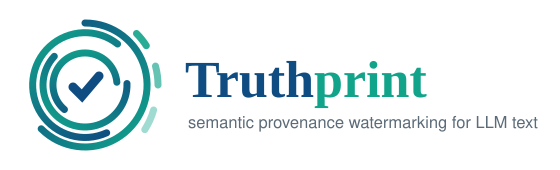

토큰이 아니라 ‘의미’에 새기는 provenance 워터마크 — 의미 불변식 계약 + 인증형(MAC) 출처 표시
아래 그림 한 장이 Truthprint의 핵심을 요약합니다 — 절대 바뀌면 안 되는 의미(불변 요소)와 바뀌어도 되는 표현(선택)을 분리하고, 표현 선택에만 비밀 페이로드를 심어 번역·바꿔쓰기 이후에도 출처를 검출·인증합니다. (클릭하면 원본 크기로 볼 수 있습니다.)
AI가 쓴 글임을 표시하는 것은 이제 연구 주제가 아니라 법적 의무이자 신뢰의 문제입니다.
EU AI Act 제50조는 생성물(텍스트 포함)을 기계판독 가능·탐지 가능 형식으로 표시하도록 의무화합니다 (2026년 8월 시행).
출처 불명의 합성 텍스트로 모델을 다시 학습시키면 세대를 거치며 모델 품질이 붕괴합니다 (Nature, 2024).
토큰(단어 선택) 기반 워터마크는 번역·패러프레이즈 과정에서 토큰이 통째로 교체되어 신호가 쉽게 사라집니다.
문장의 내용을 두 부분으로 나눕니다. 절대 바뀌면 안 되는 의미는 잠그고, 의미를 바꾸지 않는 표현의 자유도에만 워터마크를 싣습니다.
인코딩은 의미를 잠근 뒤 인증된 페이로드를 표현 선택에 싣고, 탐지는 변형된 텍스트에서 그 페이로드를 복구해 암호학적으로 검증합니다.
페이로드를 여러 문장에 나눠 심기 때문에, 번역이 일부 캐리어를 지워도 살아남은 캐리어만으로 전체를 복구합니다.
번역 과정에서 불확실해진 캐리어는 ‘틀린 값’이 아니라 ‘소거’로 처리합니다. 오류가 전파되지 않아 복원이 안정적입니다.
잠긴 불변식이 바뀌면 hI가 변해 MAC이 실패합니다. 의미를 훼손하면서 워터마크만 지우는 공격은 ‘성공한 제거’로 인정되지 않습니다.
워터마킹은 잠긴 의미를 절대 바꾸지 않습니다. 유효한 표현이 없으면 강제로 문장을 비틀지 않고 그 자리를 ‘소거’로 기록합니다.
귀속을 위조하려면 MAC(HMAC-SHA256)을 위조해야 합니다 — 표준 암호 가정 (EUF-CMA)으로 환원되는 안전성입니다.
암호학적 오탐률은 2−τ 이하입니다. τ=32 설정으로 독립 문서 2만 건을 검사했을 때 오탐 0건이 관측되었습니다.
부호율(code rate)까지는 소거를 허용하고 그 이상에서 급락합니다 — 문서가 가져야 할 최소 신뢰 길이를 예측할 수 있습니다.
파이썬 표준 라이브러리만으로 동작하는 참조 구현이 공개되어 있으며, 논문의 모든 수치는 이 코드로 재현됩니다. 실험 수치 조작 없이, 검증 가능한 것만 실측했습니다.
| 검증 항목 | 내용 | 결과 |
|---|---|---|
| P1 | 28/96 캐리어 소거 후에도 페이로드 완전 복구 | 통과 |
| P2 | 잠긴 의미(극성) 변조 시 귀속 거부 | 통과 |
| P3 | 독립 문서 20,000건 중 오탐 0건 (τ=32) | 통과 |
| P4 | 키드 맵이 문서마다 달라짐 — 전역 규칙 없음 | 통과 |
| L1–L3 | 실제 문장 라운드트립: 의미 보존·복구·변조 탐지 | 통과 |
| 테스트 | 단위 테스트 15개 (재현 하네스 겸용) | 15/15 |
40% 소거까지 100% 복구, 부호율 한계(50%) 부근에서 급락 — 이론이 예측한 ‘복구 절벽’이 실측으로 확인됩니다.
$ git clone https://github.com/leemgs/truthprint $ cd truthprint/code $ pip install -e ".[dev]" $ truthprint selftest SELFTEST: PASS $ python -m pytest -q 15 passed
| 계열 | 대표 기법 | 한계 / Truthprint의 차별점 |
|---|---|---|
| 토큰 통계 | SynthID-Text, KGW | 번역·패러프레이즈로 토큰 결정이 교체되면 신호가 소실됩니다. |
| 의미 임베딩 | SIR, SemaMark | 임베딩 유사도는 어떤 핵심 사실(부정·수량·인과·출처)을 지킬지 명시하지 못합니다. |
| 구조 의미 | SWAN (AMR) | 기존 의미 형식을 그대로 채택할 뿐, 워터마크 전용 가변성 계약은 아닙니다. |
| 본 연구 | Truthprint | 타입 지정 불변식 계약 + 인증 페이로드 — ‘무엇을 지킬지’를 기계가 필드 단위로 검증합니다. |
샘플러를 수정하지 않고 인라인 의미 실현 패스 또는 비동기 후처리 서비스로 기존 생성 스택에 결합할 수 있습니다.
코드·인용·수식처럼 표현 자유도가 낮은 구간은 소거로 처리하고, 필요 시 토큰 워터마크(SynthID 등)로 계층 폴백합니다.
EU AI Act 제50조가 요구하는 ‘기계판독 가능하고 강건한’ 표시를 위한 강건성 계층으로 배치할 수 있습니다.
암호·코딩 계층은 LLM 크기와 무관하며 문서 길이에 선형입니다 — 추가 지연이 유한하게 제한됩니다.